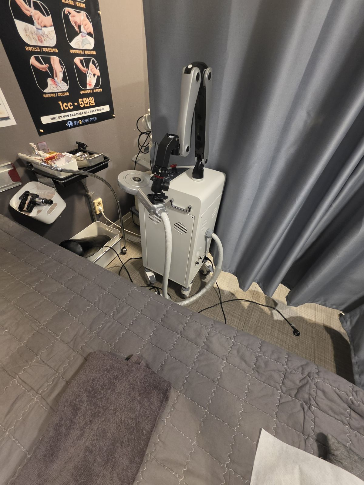
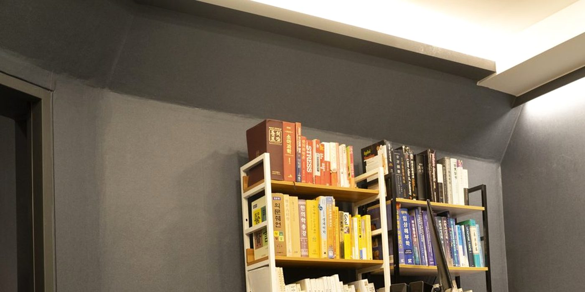

한 줄 답변
약침은 한약재에서 추출·정제한 약액을 침으로 경혈이나 통증 부위 주변에 주입하는 방법으로, 적용 여부는 진찰 후 정하며 알레르기나 출혈 경향, 복용 중인 약을 미리 알려야 합니다.
약침은 한약재에서 추출·정제한 약액을 침으로 경혈이나 통증 부위 주변에 주입하는 방법으로, 적용 여부는 진찰 후 정하며 알레르기나 출혈 경향, 복용 중인 약을 미리 알려야 합니다.
약침은 침을 놓는 것과 약액을 주입하는 것을 함께 하는 방법입니다. 한약재에서 추출해 정제한 약액을 아주 소량 사용합니다.
어떻게 쓰나요
- 통증이 있는 근육이나 관절 주변, 혹은 해당하는 경혈에 약액을 주입합니다.
- 어떤 약침을 쓸지, 쓸지 말지는 진찰 후에 정합니다.
- 좋은꿈참사랑한의원은 통증 진료에서 필요하다고 판단될 때 침, 약침, 추나 등을 연결한다고 안내합니다. 통증·추나 진료 안내도 참고하세요.

시술 전에 꼭 알려 주세요
- 알레르기 병력 (식물, 곤충, 약물)
- 복용 중인 약 (특히 혈액을 묽게 하는 약)
- 출혈이 잘 멎지 않는 경향
- 임신 중이거나 가능성이 있는 경우
- 당뇨나 자가면역질환 같은 만성 질환
시술 뒤에 살펴볼 것
- 주입 부위가 붓거나 열감이 있는지
- 가려움, 발진 같은 반응이 있는지
- 시술 당일 격한 운동이나 음주를 피하라는 안내가 있는지
불편하면 참지 말고 연락하세요. 숨쉬기 힘들거나 얼굴이 붓는 경우는 즉시 응급 진료를 받으세요.

이런 증상은 먼저 확인이 필요합니다
- 외상 후 갑자기 심한 통증과 부기가 생긴 경우
- 다리나 팔에 힘이 빠지거나 감각이 둔해진 경우
- 발열과 함께 관절이 붓고 뜨거운 경우
자주 묻는 질문
약침은 모든 통증에 쓰나요?
아닙니다. 통증의 원인과 부위, 몸 상태를 보고 필요할 때 사용합니다.
건강보험이 되나요?
적용 여부와 비용은 진찰 후 안내합니다.
이 글은 일반적인 건강 정보이며 개인의 진단이나 치료를 대신하지 않습니다. 증상이 있거나 복용 중인 약이 있다면 진료를 통해 확인하세요. 치료 효과는 개인마다 다를 수 있습니다.
지난 이야기부터 이어서 묻습니다
좋은꿈참사랑한의원 노량진점은 재진 때 지난번 이야기부터 이어서 여쭙니다. 진료시간과 예약은 오시는 길에서 확인하세요.
좋은꿈참사랑한의원 노량진점은 재진 때 지난번 이야기부터 이어서 여쭙니다. 진료시간과 예약은 오시는 길에서 확인하세요.